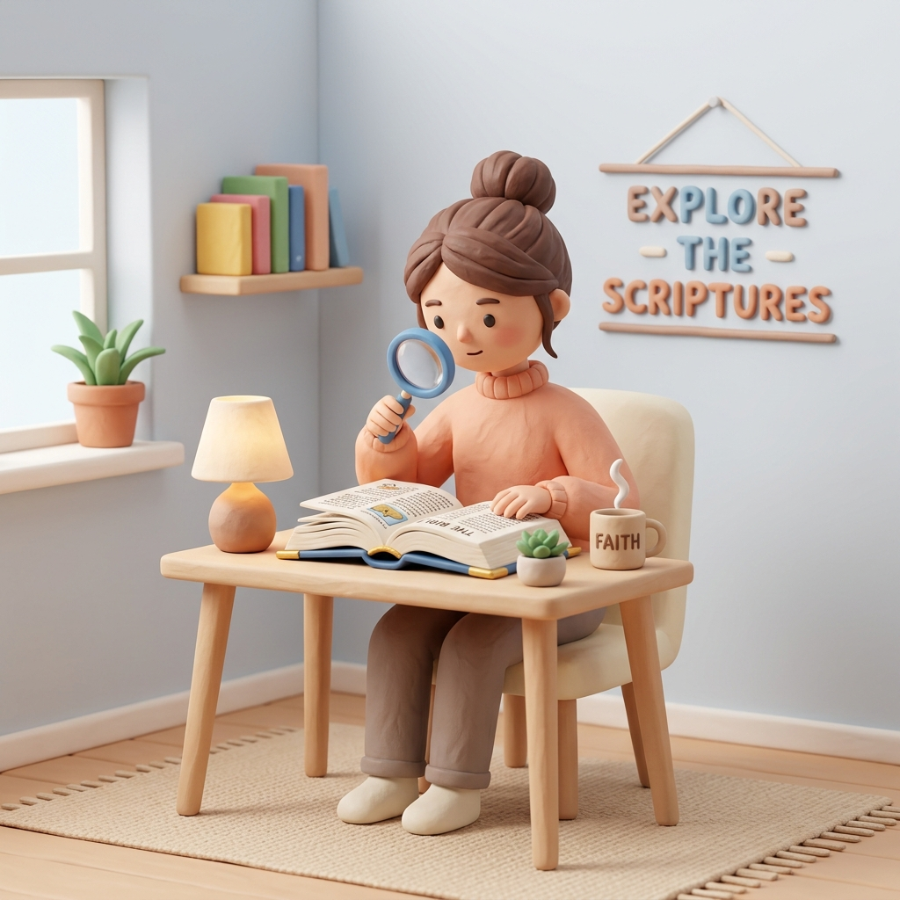

<!DOCTYPE html>
<html lang="es">
<head>
  <meta charset="UTF-8">
  <meta name="viewport" content="width=device-width, initial-scale=1.0">
  <title>Lección Diaria</title>
  <link rel="stylesheet" href="./styles.css" />
  <script defer src="https://unpkg.com/lucide@latest/dist/umd/lucide.min.js"></script>
  <script src="./app.js"></script>
  
  <style>
    body {
      background: transparent;
      padding: 16px;
      margin: 0;
      min-height: auto;
      top: 0px !important;
      font-family: Inter, Segoe UI, sans-serif;
    }
    
    /* Ocultar elementos de Google Translate */
    .skiptranslate { display: none !important; }
    .VIpgJd-ZVi9od-aZ2wEe-wOHMyf { display: none !important; }
    #goog-gt-tt { display: none !important; }
    
    .widget-container {
      max-width: 700px;
      margin: 0 auto;
      background: white;
      border-radius: var(--radius);
      box-shadow: 0 4px 20px rgba(0,0,0,0.04);
      padding: 32px;
      border: 1px solid var(--line);
    }
    
    .lang-switcher {
      display: flex;
      gap: 6px;
      margin-bottom: 24px;
      justify-content: flex-end;
    }
    .lang-btn {
      background: var(--surface-warm);
      border: 1px solid var(--line);
      border-radius: 16px;
      padding: 4px 10px;
      font-size: 0.8rem;
      cursor: pointer;
      font-weight: 600;
      color: var(--ink);
      transition: all 0.2s;
    }
    .lang-btn:hover { background: var(--line); }
    .lang-btn.active {
      background: var(--ink);
      color: white;
      border-color: var(--ink);
    }

    .date-header {
      font-weight: 700;
      color: var(--muted);
      text-transform: uppercase;
      text-decoration: underline;
      text-decoration-thickness: 2px;
      text-underline-offset: 4px;
      margin-bottom: 16px;
      font-size: 0.95rem;
      letter-spacing: 0.5px;
    }

    .lesson-title {
      color: #9c4122; /* Un rojo/terracota que encaja con el estilo cálido */
      font-size: 1.8rem;
      font-weight: 800;
      margin: 0 0 24px 0;
      text-transform: uppercase;
      letter-spacing: -0.5px;
    }

    .reading-text {
      font-size: 1.1rem;
      line-height: 1.65;
      color: var(--ink);
      margin-bottom: 20px;
    }

    .inter-image {
      margin: 28px 0;
      border-radius: 12px;
      overflow: hidden;
      border: 1px solid var(--line);
      box-shadow: 0 4px 15px rgba(0,0,0,0.05);
    }
    
    .inter-image img {
      width: 100%;
      height: auto;
      display: block;
      object-fit: cover;
      max-height: 280px;
    }

    .bible-reading {
      margin: 32px 0;
      padding-left: 20px;
      border-left: 3px solid #9c4122;
      font-family: Georgia, "Times New Roman", serif;
    }
    
    .bible-reading h4 {
      margin: 0 0 12px 0;
      font-size: 1.05rem;
      color: #9c4122;
      font-family: Inter, sans-serif;
      text-decoration: underline;
      text-underline-offset: 3px;
    }

    .bible-reading p {
      font-size: 1.15rem;
      line-height: 1.6;
      color: #b33914;
      font-style: italic;
      margin: 0 0 12px 0;
    }

    .bible-meta {
      display: block;
      font-size: 0.85rem;
      color: var(--muted);
      font-style: normal;
      font-family: Inter, sans-serif;
    }

    .egw-reading {
      margin: 32px 0;
      padding: 20px;
      background: var(--surface);
      border-radius: var(--radius);
      border-left: 4px solid #0f766e;
    }

    .egw-reading p {
      font-size: 1.05rem;
      line-height: 1.6;
      color: #0f766e;
      margin: 0 0 12px 0;
      font-family: Inter, sans-serif;
    }

    .egw-reading span {
      display: block;
      font-size: 0.9rem;
      font-weight: 600;
      color: var(--ink);
    }

    .memory-block {
      background: var(--surface-warm);
      border-radius: var(--radius);
      padding: 16px;
      margin-bottom: 32px;
      border: 1px dashed var(--gold);
      text-align: center;
    }
    .memory-block h3 {
      color: var(--gold);
      font-size: 0.85rem;
      margin: 0 0 8px 0;
      text-transform: uppercase;
      letter-spacing: 0.5px;
    }
    .memory-block p {
      font-family: Georgia, "Times New Roman", serif;
      font-size: 1.1rem;
      color: #3b2a10;
      margin: 0 0 8px 0;
      font-style: italic;
    }
    .memory-block span {
      font-size: 0.85rem;
      font-weight: 600;
      color: var(--muted);
    }
  </style>
</head>
<body>
  <!-- Contenedor oculto de Google Translate -->
  <div id="google_translate_element" style="display:none;"></div>

  <script type="text/javascript">
    function googleTranslateElementInit() {
      new google.translate.TranslateElement({
        pageLanguage: 'es',
        includedLanguages: 'en,it,es,ca',
        autoDisplay: false
      }, 'google_translate_element');
    }
  </script>
  <script type="text/javascript" src="https://translate.google.com/translate_a/element.js?cb=googleTranslateElementInit"></script>

  <div class="widget-container" id="widget-root"></div>

  <script>
    const bibleTexts = {
      "Hebreos 11:1": "Es pues la fe la sustancia de las cosas que se esperan, la demostración de las cosas que no se ven.",
      "Romanos 1:17; 2 Corintios 5:7": "Porque en él la justicia de Dios se descubre de fe en fe; como está escrito: Mas el justo vivirá por la fe. (Rom 1:17)<br><br>(Porque por fe andamos, no por vista;) (2 Cor 5:7)",
      "Marcos 9:14-29": "Y Jesús le dijo: Si puedes creer, al que cree todo es posible. Y luego el padre del muchacho, llorando y clamando, dijo: Creo, ayuda mi incredulidad.",
      "Hebreos 11:1; Early Writings, p. 72": "Es pues la fe la sustancia de las cosas que se esperan, la demostración de las cosas que no se ven.",
      "Santiago 2:17-18; Hebreos 11": "Así también la fe, si no tuviere obras, es muerta en sí misma. Pero alguno dirá: Tú tienes fe, y yo tengo obras: muéstrame tu fe sin tus obras, y yo te mostraré mi fe por mis obras.",
      "Hebreos 11:8; Genesis 12:1-4": "EMPERO Jehová había dicho á Abram: Vete de tu tierra y de tu parentela, y de la casa de tu padre, á la tierra que te mostraré. (Gen 12:1)<br><br>Por la fe Abraham, siendo llamado, obedeció para salir al lugar que había de recibir por heredad; y salió sin saber dónde iba. (Heb 11:8)",
      "Hebreos 11; Ellen G. White, Early Writings, p. 72": "Es pues la fe la sustancia de las cosas que se esperan, la demostración de las cosas que no se ven. Porque por ella alcanzaron testimonio los antiguos.",
      "Hebreos 11": "Es pues la fe la sustancia de las cosas que se esperan, la demostración de las cosas que no se ven. Porque por ella alcanzaron testimonio los antiguos."
    };

    function changeLanguage(langCode, btn) {
      document.querySelectorAll('.lang-btn').forEach(b => b.classList.remove('active'));
      btn.classList.add('active');

      const select = document.querySelector('.goog-te-combo');
      if (select) {
        select.value = langCode;
        select.dispatchEvent(new Event('change'));
      }
    }

    document.addEventListener("DOMContentLoaded", () => {
      const day = getTodaySchoolDay();
      const root = document.getElementById("widget-root");
      
      const bibleText = bibleTexts[day.reading] || "Texto bíblico completo disponible en tu Biblia.";

      // Formatear la fecha
      const dateParts = day.date.split('-');
      const dateObj = new Date(dateParts[0], dateParts[1] - 1, dateParts[2]);
      const formattedDate = dateObj.toLocaleDateString('es-ES', { weekday: 'long', day: 'numeric', month: 'long' });

      // Dividir el resumen en 2 parrafos
      const sentences = day.summary.split(/(?<=\.)\s+/);
      const half = Math.ceil(sentences.length / 2);
      const p1 = sentences.slice(0, half).join(' ');
      const p2 = sentences.slice(half).join(' ');

      root.innerHTML = `
        <div class="lang-switcher" translate="no">
          <button class="lang-btn active" onclick="changeLanguage('es', this)">🇪🇸 ES</button>
          <button class="lang-btn" onclick="changeLanguage('en', this)">🇬🇧 EN</button>
          <button class="lang-btn" onclick="changeLanguage('it', this)">🇮🇹 IT</button>
          <button class="lang-btn" onclick="changeLanguage('ca', this)">🏴 CA</button>
        </div>

        <div class="memory-block">
          <h3>Versículo para Memorizar</h3>
          <p>"${escapeHtml(sabbathSchool.memoryText)}"</p>
          <span>— ${escapeHtml(sabbathSchool.memoryRef)}</span>
        </div>

        <div class="date-header">${escapeHtml(formattedDate)}</div>
        <h1 class="lesson-title">${escapeHtml(sabbathSchool.title)}: ${escapeHtml(day.title)}</h1>
        
        <p class="reading-text">${escapeHtml(p1)}</p>
        
        <div class="inter-image">
          
        </div>
        
        ${p2 ? `<p class="reading-text">${escapeHtml(p2)}</p>` : ''}
        
        <div class="bible-reading">
          <h4>Lee ${escapeHtml(day.reading)}</h4>
          <p>${bibleText}</p>
          <span class="bible-meta" translate="no">Reina Valera Antigua (RV1909)</span>
        </div>
        
        <div class="egw-reading">
          <p>«${escapeHtml(sabbathSchool.egwFocus.quote)}»</p>
          <span>${escapeHtml(sabbathSchool.egwFocus.reference)}</span>
          ${
            sabbathSchool.egwFocus.link
              ? `<a href="${escapeHtml(sabbathSchool.egwFocus.link)}" target="_blank" rel="noopener noreferrer" style="display:inline-flex; align-items:center; gap:4px; margin-top:8px; font-size:0.85rem; color:#0f766e; text-decoration:none;">
                   Leer completo <i data-lucide="external-link" style="width:14px;height:14px"></i>
                 </a>`
              : ``
          }
        </div>
      `;

      if (window.lucide) {
        window.lucide.createIcons();
      }
    });
  </script>
</body>
</html>
